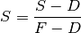

Background Correction¶
Performs a correction for pixel specific intensity variances over the range of intensities.
Operates on a stack of sample images, S using flat, F (full intensity) and dark, D (zero intensity) images.

After normalisation the value of each pixel is limited to a given range to prevent bad values from causing issues with later filtering.